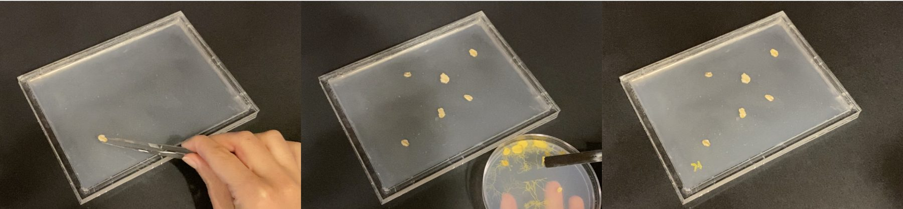
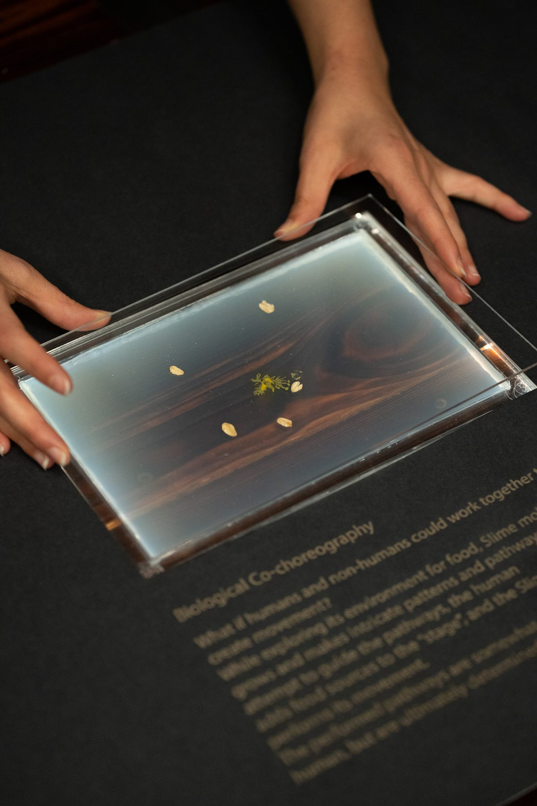
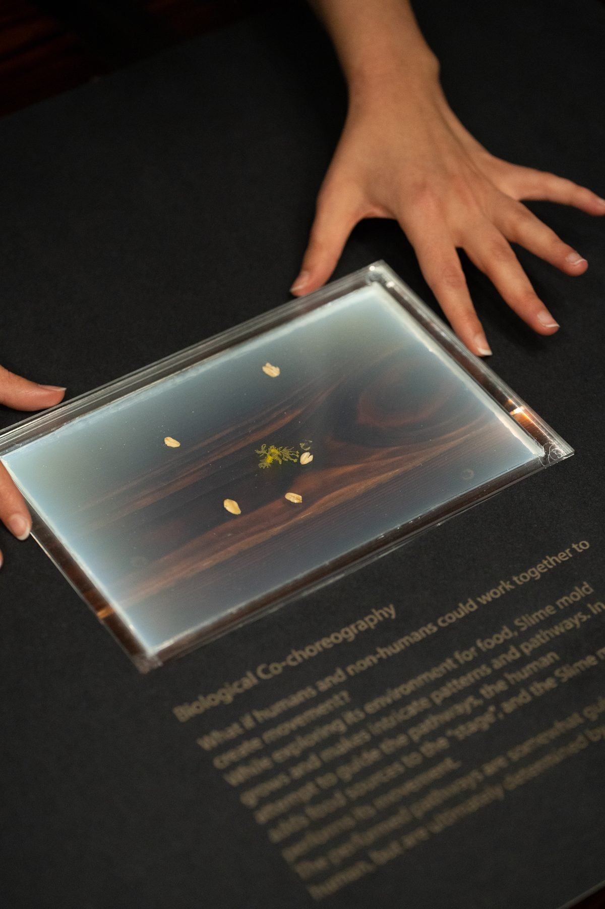

A collaborative choreography process with slime mold.
Biological Co-choreography is a dance score and performance inspired by what looked like slime mold “moving” throughout its environment in timelapse videos of slime mold’s foraging behavior. I designed and fabricated a transparent acrylic stage-like petri dish that could hold agar substrate at its base and could be covered in order to protect the slime mold growing inside. Over the course of 5 days, the slime mold and I took turns and together created the Biological Co-choreography. I began by placing a trail of oats on top of the agar substrate in the stage dish and inoculating the stage dish with the slime mold culture. Now it was the slime mold’s “turn.”


After 24 hours, I was surprised to discover that the slime mold did not grow towards the oat that was closest to the inoculation point. It did not move like I thought it would. Instead, the slime mold was making its way towards the second-closest oat. This was when I realized that what was emerging was a collaborative choreography between the slime mold and myself. We both took actions and made decisions that led to the composition created. A “back and forth” motion between the slime mold and me went on for several days. I laid down oats, curious to see if the slime mold would take the oats as a scaffold for its pathway, and the slime mold grew in its own pathway, only sometimes crossing over and conforming to the pathway I initiated.

